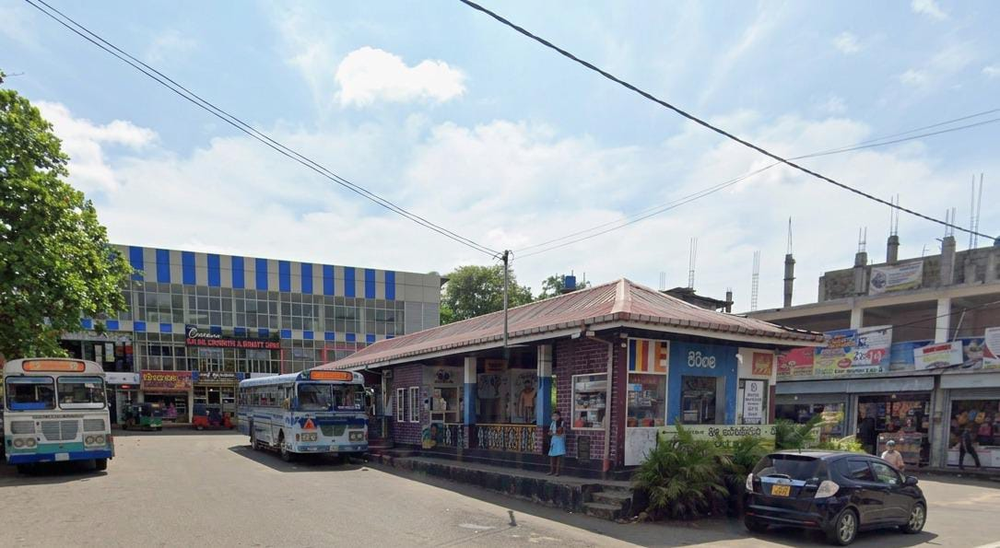
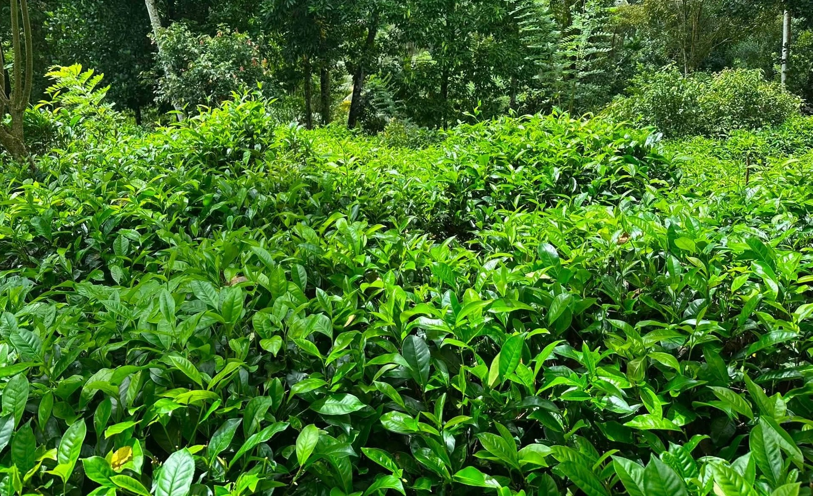
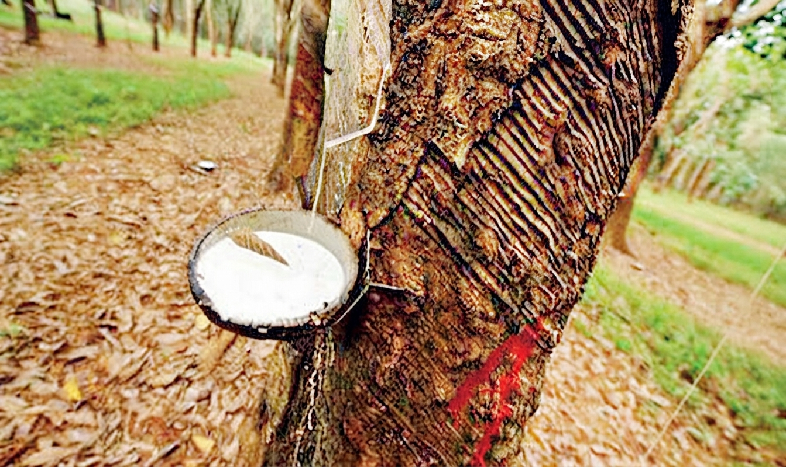

About Pitigala
Pitigala is a peaceful village located in the Galle District of the Southern Province in Sri Lanka. It belongs to the Niyagama Divisional Secretariat and is home to a warm, close-knit community. The village is blessed with rich natural beauty, featuring green tea gardens, rubber estates, and rolling hills.
Accessibility
Nestled within the region, Pitigala is well-connected and easily accessible from its neighboring major towns. Visitors and residents can enter the village through three primary routes, making it a convenient local hub. Whether you are traveling from Mapalagama, Elpitiya, or Palawaththa, reaching Pitigala is a straightforward journey. The distances from these nearest towns are as follows:
- From Pelawaththa: 10.3 Km
- From Elpitiya: 13.5 Km
- From Mapalagama: 17.8 Km
History of Pitigala
The name 'Pitigala' comes from two Sinhala words: 'pitiya,' which means land, and 'gala,' which means rock. It is called the 'land of rocks' because there are many large rocks and mountains in the area. Over time, the words 'pitiya' and 'gala' were combined to form the name Pitigala.
Village Geo-Portal
Explore the spatial data and land use of Pitigala. Land use categories include: Residential, Administrative, Commercial, Agriculture, Religious, Playground, and Educational.
Demographics & Education
Population
| Gender | Percentage |
|---|---|
| Female | 53% |
| Male | 47% |
Education
| Grade Level | Percentage |
|---|---|
| Grades 1-5 | 41% |
| Grades 6-11 | 50% |
| Grades 12-13 | 9% |
Agriculture
Agriculture is the economic backbone of Pitigala, heavily shaped by the wet zone climate of the Southern Province.

Tea Cultivation
Lush green tea smallholdings and sprawling estates cover the rolling hills, providing a major source of employment and high-quality green leaves for regional factories.

Rubber Cultivation
Rubber plantations are deeply rooted in Pitigala's history. Tapping rubber latex is a traditional daily routine for many local families, contributing significantly to the local economy.
Coconut Cultivation
Interspersed with residential properties and mixed crop lands, coconut palms thrive well, supplying domestic and commercial requirements for households.
Culture & Community Activities
Cultural Events
- Katina Ceremony
- Dewol Madu
- Perahara
- New Year Celebrations
- Carnival
Tourism & Attractions
Discover the scenic natural water bodies and landmarks that make Pitigala a peaceful getaway.

Kalu Dola
A tranquil and scenic stream known for its dark, clear waters flowing through lush greenery, offering a soothing natural retreat for nature lovers.

Gal Dola
A picturesque rocky stream environment characterized by unique boulder formations and cool flowing water streams, perfect for quiet outdoor exploration.

Kaludiya Pokuna
A historic and mystical dark water pond surrounded by dense foliage, rich in local folklore and environmental beauty.

Athukorala Tea Factory & Tea Centre
The tea factory is a major attraction because of its beautiful surroundings and quality products. Visitors enjoy experiencing tea plucking and learning how leaves are processed into final products.
Community Forum & Feedback
Connect with our community! Ask questions or leave your feedback below.
Recent Comments